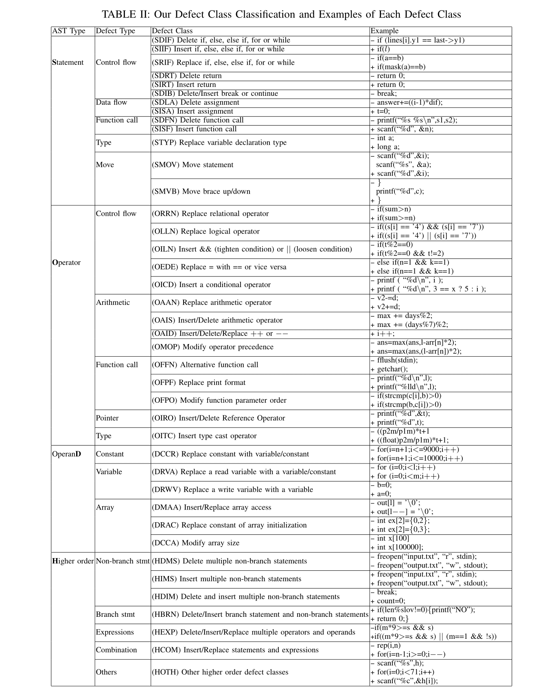

Codeflaws benchmark
The Codeflaws benchmark consists of 7436 programs from the Codeforces online database. It is a collection of 3902 defects classified across 40 defect classes. It allows comprehensive investigation of the set of repairable defect classes by various program repair tools.
Download codeflaws.tar.gz for an achive that contains all programs in our benchmark (without script for running repair tools). Refer to Codeflaws-Github for detailed explanation about the structure of the folders and script for running repair tools, including Angelix, GenProg, SPR, and Prophet.
Read our paper or poster to find out more about Codeflaws
Defects in Codeflaws
Table below shows the detailed classification:
README.md contains information about the structure of the benchmark and the provided script for running each repair tool.
Defect Table contains defect classes information about each defect.
Authors and Contributors
Contact Shin Hwei Tan (@stan6) or Sergey Mechtaev (@mechtaev) for questions about the benchmark.